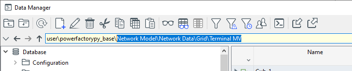
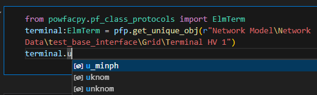

# If you use IPython/Jupyter:
import sys
sys.path.append(
r"C:\Program Files\DIgSILENT\PowerFactory 2023 SP5\Python\3.11"
) # you may use a different directory
# Get the PF app
import powerfactory
app = powerfactory.GetApplication()Getting Started
The tutorials have been moved to the website. The version here is no longer maintained.
This tutorial gives an overview of the interaction with the PowerFactory database using powfacpy. The methods introduced in this tutorial serve as a basis to do more complex things and to write more readable code using less lines of code. Furthermore, the error messages powfacpy provides are a great help when debugging larger scripts or in larger projects that use the python API of PowerFactory.
For a complete list of classes and methods, please have a look at the API Chapter of the documentation or at the source code.
Similar to using the Python API of PowerFactory directly, we first need to import the powerfactory module from PowerFactory’s installation directory (in case you want to access PowerFactory externally using IPython/Jupyter) and get the application.
Then import powfacpy and create an instance of class PFActiveProject (with argument app). This interface class is mainly used to interact with the active project in the PowerFactory database as we will see below.
from powfacpy.base.active_project import ActiveProject
pfp = ActiveProject(app)Note that pfp has an attribute app that can be used similar to the app variable we loaded from the powerfactory module.
The PowerFactory project used in this tutorial can be found in the powfacpy repository under *tests_input_tests.pfd*.
Here are two ways to 1. show the PowerFactory application and 2. activate a project:
app.Show()
app.ActivateProject(
r"powfacpy\powfacpy_tests_copy_where_tests_run"
) # You may change the project path.
pfp.app.Show()
pfp.app.ActivateProject(
r"powfacpy\powfacpy_tests_copy_where_tests_run"
) # You may change the project path.0So where does pfp differ from the Python interface that app provides? Let’s see.
1 Accessing Objects
Let’s access an object from the PowerFactory database. When using app, we would use the methods app.GetProjectFolder, app.GetChildren or app.GetContents. Instead, we use pfp.get_obj with the path of the object (relative to the folder of the active project) as an argument:
mv_terminal = pfp.get_obj(
r"Network Model\Network Data\test_active_project_interface\Grid\Terminal MV"
)[0]The [0] at the end is necessary because the method always returns a list (with one element in this case).
Note that you can easily copy and paste the path from the data manager while selecting the object in the data tree:

pfp.get_obj also differs in other ways from app.GetContents and app.GetCalcRelevantObjects. You can set a condition for the objects that you want to access, which is best described by an example:
hv_terminals = pfp.get_obj(
r"Network Model\Network Data\test_active_project_interface\Grid\*.ElmTerm",
condition=lambda x: x.uknom > 50,
)First of all, we use a wildcard (*.ElmTerm) to access all terminals in the Grid folder. The condition argument is a function that defines a certain condition the objects have to fulfill and returns a boolean value. In this case, the input argument x is an ElmTerm and x.uknom > 50 gets its attribute uknom (nominal voltage) and checks whether it is larger than 50 (kV). Using this .uknom notation is equivalent to using getattr(x, "uknom"), which is a python method that returns an attribute of any object (also PowerFactory objects). You can also define more complex functions, such as lambda x: x.uknom > 50 and x.uknom < 200 to access terminals between 50 and 200 kV.
It is also possible to include subfolders in the search for objects:
terminals = pfp.get_obj(
r"Network Model\Network Data\*.ElmTerm", include_subfolders=True
)This will search in Network Model\Network Data and all its subfolders (by default include_subfolders is False, be carefull as including all subfolders in the search can affect the performance).
What’s also very helpful is that pfp.get_obj throws an error if the path is incorrect and shows exactly where it fails. So
terminals = pfp.get_obj(r"Network Model\wrong_folder_name\*.ElmTerm")
will throw an error:
PFPathError: ‘wrong_folder_name’ does not exist in ’_baseModel’
By default, an exception is also raised if no objects are found in the specified folder. For example:
terminals = pfp.get_obj(r"Network Model\Network Data\wrong_object_name*", include_subfolders=True)returns
PFPathError: ’wrong_object_name*’ does not exist in ’_baseModelData’
This can be turned off by setting the optional argument error_if_non_existent=False, then an empty list will be returned.
If you want to access objects in a folder many times and don’t want to use the whole path relative to the active project every time, you can also specifiy a parent folder where the search path starts (this can also be more performant):
grid_folder = pfp.get_obj(
r"Network Model\Network Data\test_active_project_interface\Grid"
)[0]
mv_terminal = pfp.get_obj("Terminal MV", parent_folder=grid_folder)[0]
hv_terminal = pfp.get_obj("Terminal HV 1", parent_folder=grid_folder)[0]You can also use brackets to call get_obj (the PFActiveProject class defines a __getitem__ method that calls get_obj without optional arguments):
terminals = pfp[
r"Network Model\Network Data\test_active_project_interface\Grid\*.ElmTerm"
]The get_obj command can become verbose with many keyword arguments. This can be inconvenient, for example when you have to call the method many times with the same arguments. powfacpy provides the get_object_partial method which returns a Callable. This way you can define new variations of get_obj:
get_obj_subf = pfp.get_obj_partial(include_subfolders=True)
# This can now be used with further arguments of 'get_obj' as follows (and will always assume 'include_subfolders=True'):
terminals = get_obj_subf("*.ElmTerm", parent_folder=grid_folder)Under the hood the partial function from the built-in functools module of Python is used (it is actually pretty simple to do the above with any Python method/function). Note that for the commonly required inclusion of subfolders in the search there is actually a separate method get_obj_including_subfolders available (another alternative for network objects in get_calc_relevant_obj as described below).
An alternative to pfp.get_obj is pfp.get_unique_obj. Use this function if you want to access a single unique object (i.e. an object that you expect to only exist once) from the database and want to avoid the [0] (which is easily forgotten).
terminal_1 = pfp.get_unique_obj(
r"Network Model\Network Data\test_active_project_interface\Grid\Terminal HV 1"
)get_unique_obj will throw an error if the specified path is not attributable to a single unique object (i.e. also when two or more objects are found).
Finally, yet another alternative for getting network objects is get_calc_relevant_obj: powfacpy wraps the GetCalcRelevenatObjects method and adds optional arguments, similar to get_obj:
terminals = pfp.get_calc_relevant_obj(
"ElmTerm", error_if_non_existent=False, includeOutOfService=0
)2 Accessing Project Folders and Data
The PFActiveProject class defines a number of properties to directly access relevant project folders (under the hood, the GetProjectFolder and GetDataFolder methods are used). Here are some examples (you may just type pfp.folder and your IDE will autocomplete all the properties):
pfp.study_cases_folder # This is a getter property returning StudyCases.IntPrjfolder
pfp.network_model_folder
pfp.zones_folder
pfp.variations_folder
pfp.operation_scenarios_folder
# ...<powerfactory.DataObject <l1>\seberlein.IntUser\powfacpy\powfacpy_tests_copy_where_tests_run.IntPrj\Network Model.IntPrjfolder\Operation Scenarios.IntPrjfolder</l1>>To get all active grids/networks (ElmNet) use:
active_networks = pfp.get_active_networks()
# pfp.app.GetCalcRelevantObjects(".ElmNet") also returns the summary grid in the study case which is usually not desired.3 Getting Objects from the Active Study Case
The native GetFromStudyCase method returns the first object found that satisfies the criteria or creates a new object in the active study case. This is a common source of errors when more than one object satisfies the criteria and this goes unnoticed (this often happens for example when users work on the same project with different language settings). You can use the powfacpy method instead which prints a warning or raises an error if the the object found is not unique:
results_obj = pfp.get_from_study_case("ElmRes", if_not_unique="warning")d:\User\seberlein\FraunhIEE-UniKassel-PowSysStability\powfacpy\docs\tutorials\..\..\src\powfacpy\base\active_project.py:173: UserWarning: The returned *.ElmRes object is not unique in the study case: 'Study Cases\test_active_project_interface\Study Case 1'. Make sure that the correct *.ElmRes object is used.
warn(4 Type Hints
Type hints are used in Python to improve the readability and code completion, but do not actually affect the excuted code (except when you do static type checking). They are often seen in function/method definitions and are preceded by a colon, e.g.:
def add(a: int, b: int) -> int:
return a + bThis means that the function expects two input arguments of type integer and returns an integer. powfacpy defines protocol classes for (almost) all PowerFactory classes (more than 200) from the scripting reference (with very few exceptions) and a few additional classes (such as ‘IntSite’ which is not mentioned in the scripting reference).
In the following example a type hint is used (‘:ElmTerm’). Your IDE will then autocomplete all attributes (methods and data) of the variable ‘terminal’:
from powfacpy.pf_class_protocols import ElmTerm
terminal: ElmTerm = pfp.get_unique_obj(
r"Network Model\Network Data\test_active_project_interface\Grid\Terminal HV 1"
)
terminal.uknom110.0Any modern IDE should autocomplete your code while writing:

Note that this also works with lists:
terminals: list[ElmTerm] = pfp.get_calc_relevant_obj("ElmTerm")5 Setting and Getting Object Attributes
How about setting data in the database? You can set attributes of an object as follows:
pfp.set_attr(
r"Network Model\Network Data\test_active_project_interface\Grid\Terminal MV",
{"uknom": 33, "outserv": 0},
)So with only one command we set the attributes “uknom” and “outserv” of the terminal. This saves time and is also very readable code. Note that the method set_attr accepts the path (string) but also a PowerFactory object. For example, we could also use the object mv_terminal that we loaded above:
pfp.set_attr(mv_terminal, {"uknom": 33, "outserv": 0})This applies to many other methods in powfacpy. Loading the object only once and then using the object can be more efficient than using the path string many times.
If you want to get an attribute of an object, write:
nominal_voltage = pfp.get_attr(
r"Network Model\Network Data\test_active_project_interface\Grid\Terminal MV",
"uknom",
)
# Equivalent:
nominal_voltage = pfp.get_attr(mv_terminal, "uknom")
nominal_voltage = pfp.get_attr(
"Terminal MV",
"uknom",
parent_folder=r"Network Model\Network Data\test_active_project_interface\Grid",
)6 Creating Objects and Directories
If you want to create a new object, use:
from powfacpy.pf_class_protocols import BlkDef, IntPrjfolder
new_obj: BlkDef = pfp.create_by_path(r"Library\Dynamic Models\dummy.BlkDef")This will create an object of class “BlkDef” with the name “dummy” in the folder “LibraryModels”. You can also use
new_obj: BlkDef = pfp.create_in_folder(
"dummy.BlkDef", r"Library\Dynamic Models", overwrite=True
)
# Or equivalent:
models_folder: IntPrjfolder = pfp.get_unique_obj(r"Library\Dynamic Models")
new_obj: BlkDef = pfp.create_in_folder("dummy.BlkDef", models_folder, overwrite=True)which will overwrite the former object (this avoids that PowerFactory creates dummy(1), dummy(2), … every time the code is run). overwrite=True is the default setting.
To create a directory, i.e. a nested folder structure, use
pfp.create_directory(
r"New Study Case\Cases Normal Opration", parent_folder="Study Cases"
)<powerfactory.DataObject <l1>\seberlein.IntUser\powfacpy\powfacpy_tests_copy_where_tests_run.IntPrj\Study Cases.IntPrjfolder\New Study Case\Cases Normal Opration</l1>>7 Copying Objects
The method copy_obj can be seen as a method that uses get_obj as a first step to access objects and then copies them to a target folder under the hood. Therefore, copy_obj shares many (optional) input arguments with get_obj to first get the objects to be copied. Additionally, a target folder is required. For example, to copy all objects from a source folder to a target folder, write
source_folder = r"Library\Dynamic Models\TestDummyFolder"
target_folder = r"Library\Dynamic Models\TestCopyMultiple"
new_copied_objects = pfp.copy_obj("*", target_folder, parent_folder=source_folder)Note that parent folder is an optional argument (used for the source), so you could also specify the full object path as the first argument instead of using * (similar to get_obj). To select certain objects from the source folder, you can use optional arguments like condition or include_subfolders, also similar to the get_obj method. The method also accepts a list of PowerFactory objects:
list_of_objects_to_copy = pfp.get_obj("*", parent_folder=source_folder)
target_folder_obj = pfp.get_unique_obj(r"Library\Dynamic Models\TestCopyMultiple")
new_copied_objects = pfp.copy_obj(
list_of_objects_to_copy, target_folder_obj, overwrite=True
)Note that the target folder object (instead of a path string) is used (second argument).
If you want to copy a single object, use copy_single_obj. You have the option to give it a new name (loc_name attribute):
new_copy = pfp.copy_single_obj(
r"Library\Dynamic Models\Linear_interpolation",
r"Library\Dynamic Models\TestCopy",
new_name="new_dummy_name",
)First input here is the path of the object to be copied, but you can also use a PowerFactory object.
8 Deleting Objects
Deleting objects works in a similar fashion, because under the hood it uses get_obj and deletes the returned objects in the second step.
pfp.delete_obj(
"to_be_deleted*",
parent_folder=r"Library\Dynamic Models\TestDelete",
include_subfolders=True,
error_if_non_existent=False,
)And of course you could also use PowerFactory objects as an input:
objects_in_folder = pfp.get_obj(
"to_be_deleted*",
parent_folder=r"Library\Dynamic Models\TestDelete",
error_if_non_existent=False,
)
pfp.delete_obj(objects_in_folder, error_if_non_existent=False)You can also delete all objects in a folder:
pfp.clear_folder("Library\Dynamic Models\TestDelete")9 Further Useful Methods
Further helpful methods are briefly described in the following. get_upstream_obj returns an upsream object that meets a condition (i.e. the method goes upwards in the folder hierarchy until a parent object is found that meets the condition).
Here this is used to find the grid that contains a given object:
obj = pfp.get_unique_obj(
r"Network Model\Network Data\test_database_interface\Grid\Voltage source ctrl\Frequency"
)
grid = pfp.get_upstream_obj(obj, lambda x: x.loc_name == "Grid")
print(pfp.get_path_of_object(grid))Network Model\Network Data\test_database_interface\Gridget_path_of_object returns the path of an object relative to the active project and without any class names. The user can can directly copy the returned string to the data manager to quickly find the object in the PowerFactory app.
There are more methods to get the path of an object:
print(pfp.get_path_of_object(grid)) # path inside project
print(pfp.get_path_of_obj_with_class_names(grid))
print(pfp.get_full_path_of_object(grid)) # full path in database
print(pfp.get_full_path_of_object_with_class_names(grid))Network Model\Network Data\test_database_interface\Grid
Network Model.IntPrjfolder\Network Data.IntPrjfolder\test_database_interface\Grid.ElmNet
\seberlein\powfacpy\powfacpy_tests_copy_where_tests_run\Network Model\Network Data\test_database_interface\Grid
\seberlein.IntUser\powfacpy\powfacpy_tests_copy_where_tests_run.IntPrj\Network Model.IntPrjfolder\Network Data.IntPrjfolder\test_database_interface\Grid.ElmNet10 The Folder Class
Most of the functionality described above is not limited to the folder of the active project, but can be used with any folder in the database. The class ‘Folder’ can be used with any folder. Path input arguments are then relative to that folder (and not to the active project as above, unless of course a ‘parent_folder’ is specified):
from powfacpy.base.folder import Folder
network_data_folder = Folder(r"Network Model\Network Data", app)
grid = network_data_folder.get_unique_obj(
"test_active_project_interface\Grid"
) # relative to 'Network Data' folder
print(network_data_folder.get_path_of_object(grid))test_active_project_interface\GridNote that ‘Folder’ instances are iterable. For example, you can use a for-loop to iterate through the (direct) children of the folder:
for object in network_data_folder:
print(network_data_folder.get_path_of_object(object))Areas
Backbones
Virtual Power Plants
Boundaries
Cable Layouts
Circuits
Distribution correlations
Feeders
Meteo Stations
Operators
Owners
Paths
Routes
Zones
test_plot_interface
network_for_elmfiles
test_case_studies
test_dyn_sim_interface
test_active_project_interface
test_network_interface
test_results_interface
test_database_interface
test_model_exchange_interfaces